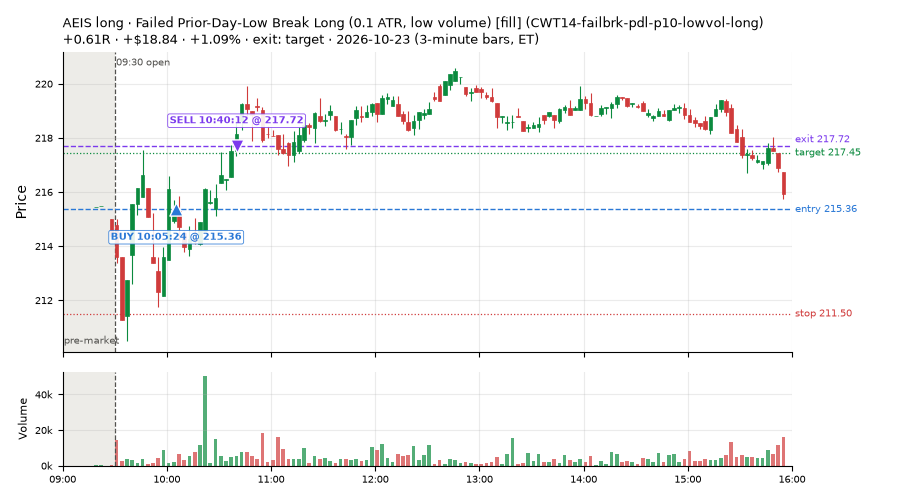
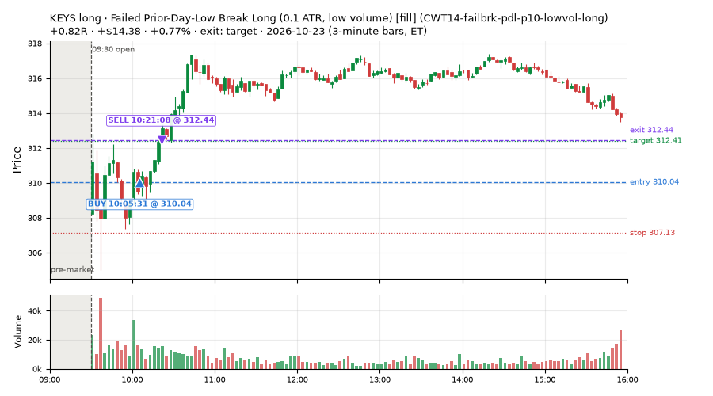
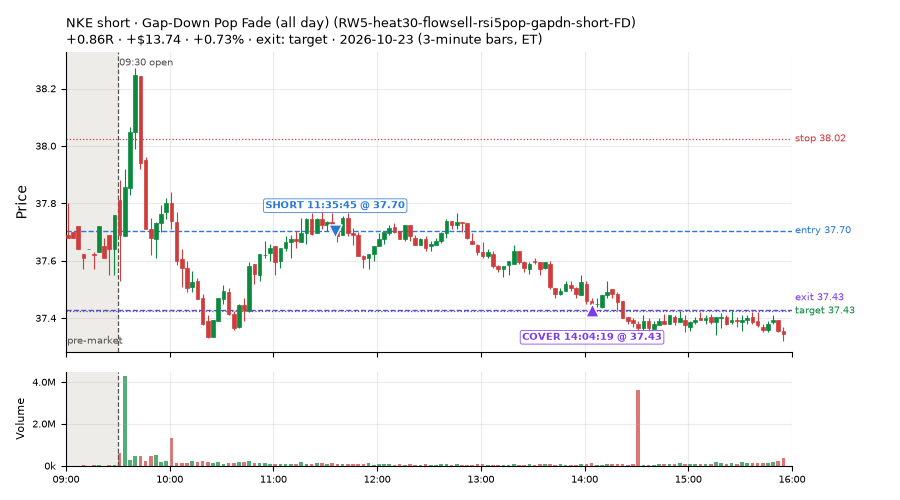
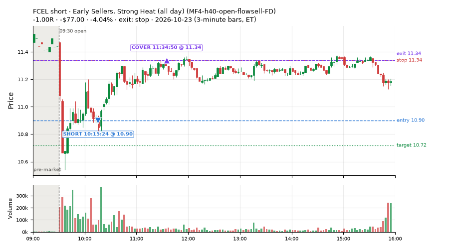
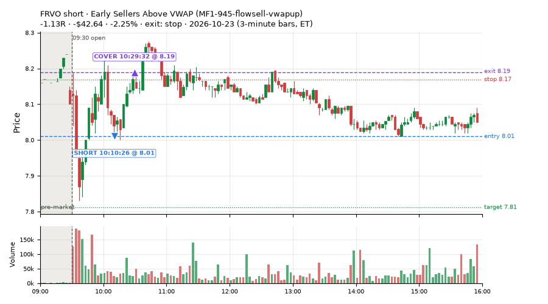
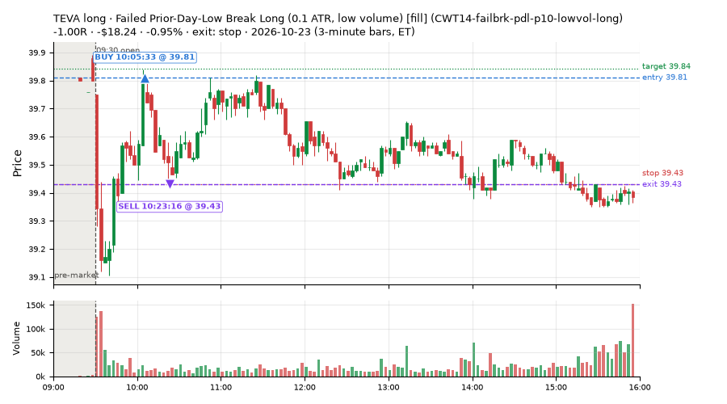
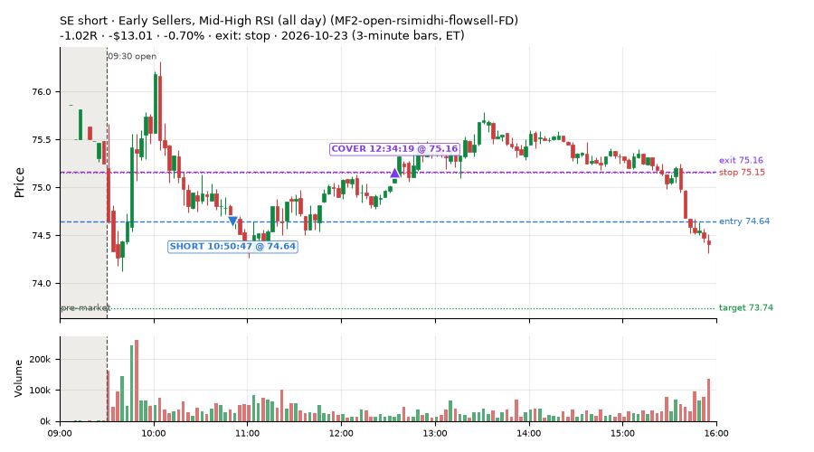
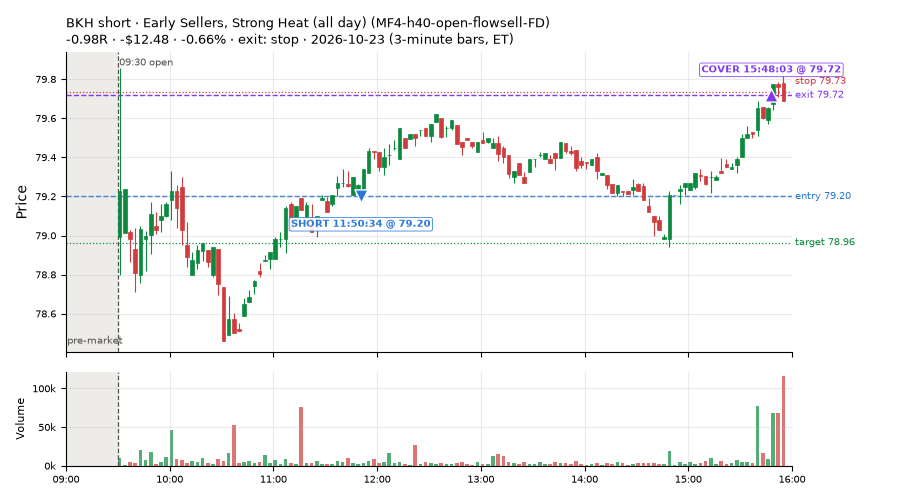

32 trades · win rate 56% · P/L $-80.80
PROBATION: no live setup has passed both locked test periods. 10 owner-directed setups added 2026-10-08 (MarcoFlow top 5 + 5 new), untested live. RW6G1 (RW6 + VWAP band guard) added 2026-10-09, probation.

| Symbol | Setup | Side | In | Out | Entry | Exit | Exit reason | % gained | P/L |
|---|---|---|---|---|---|---|---|---|---|
| AEIS | Failed Prior-Day-Low Break Long (0.1 ATR, low volume) [fill] (CWT14-failbrk-pdl-p10-lowvol-long) | long | 10:05 | 10:40 | 215.36 | 217.72 | target | +1.09% | $18.84 |
| KEYS | Failed Prior-Day-Low Break Long (0.1 ATR, low volume) [fill] (CWT14-failbrk-pdl-p10-lowvol-long) | long | 10:05 | 10:21 | 310.04 | 312.44 | target | +0.77% | $14.38 |
| NKE | Gap-Down Pop Fade (all day) (RW5-heat30-flowsell-rsi5pop-gapdn-short-FD) | short | 11:35 | 14:04 | 37.70 | 37.43 | target | +0.73% | $13.74 |
| Symbol | Setup | Side | In | Out | Entry | Exit | Exit reason | % lost | P/L |
|---|---|---|---|---|---|---|---|---|---|
| FCEL | MF4-h40-open-flowsell-FD | short | 10:15 | 11:34 | 10.90 | 11.34 | stop | -4.04% | $-77.00 |
| FRVO | MF1-945-flowsell-vwapup | short | 10:10 | 10:29 | 8.01 | 8.19 | stop | -2.25% | $-42.64 |
| TEVA | CWT14-failbrk-pdl-p10-lowvol-long | long | 10:05 | 10:23 | 39.81 | 39.43 | stop | -0.95% | $-18.24 |
| SE | MF2-open-rsimidhi-flowsell-FD | short | 10:50 | 12:34 | 74.64 | 75.16 | stop | -0.70% | $-13.01 |
| BKH | MF4-h40-open-flowsell-FD | short | 11:50 | 15:48 | 79.20 | 79.72 | stop | -0.66% | $-12.48 |








Signal to fill: median 1s, 90th percentile 3s (32 trades). Bars close each minute; the order follows the bar close.
Best excursion (MFE): median 0.49R; worst (MAE) median 0.42R. 19% of trades never got +0.25R in our favour; 1 reached +1R and still closed at or below 0.
| Symbol | Setup | Best R | Worst R | Closed R |
|---|---|---|---|---|
| SDS | MF2-open-rsimidhi-flowsell-FD | +1.04 | -1.00 | -1.03 |
| SE | MF2-open-rsimidhi-flowsell-FD | +0.72 | -1.06 | -1.02 |
| BKH | RW3-gapdn-rsi5pop-flowsell-short-FD | +0.74 | -0.87 | -0.85 |
| BKH | RW5-heat30-flowsell-rsi5pop-gapdn-short-FD | +0.74 | -0.87 | -0.85 |
| BKH | MF4-h40-open-flowsell-FD | +0.49 | -1.03 | -0.98 |
| Entry time | Trades | Win | Avg R | P/L |
|---|---|---|---|---|
| 09:50-10:30 | 5 | 40% | -0.34 | $-104.66 |
| 10:30-11:30 | 13 | 77% | +0.20 | $39.83 |
| 11:30-13:00 | 10 | 50% | -0.16 | $-8.73 |
| 13:00-14:00 | 2 | 50% | -0.06 | $-3.24 |
| 14:00-16:00 | 2 | 0% | -0.35 | $-4.00 |
| Setup | Trades | Win | Avg R | Adj R (net of SPY) | P/L |
|---|---|---|---|---|---|
| Failed Prior-Day-Low Break Long (0.1 ATR, low volume) [fill] (CWT14-failbrk-pdl-p10-lowvol-long) | 14.0 | 86% | +0.25 | +0.14 | $61.95 |
| Early Sellers Above VWAP (MF1-945-flowsell-vwapup) owner-directed; holdouts once: Sep-Oct +0.169R n86, Apr-Jun -0.050R n429 | 1.0 | 0% | -1.13 | -1.19 | $-42.64 |
| Early Sellers, Mid-High RSI (all day) (MF2-open-rsimidhi-flowsell-FD) | 2.0 | 0% | -1.03 | -1.31 | $-18.09 |
| Early Sellers, Strong Heat (all day) (MF4-h40-open-flowsell-FD) | 5.0 | 20% | -0.39 | -0.73 | $-85.63 |
| Afternoon VWAP Reclaim Fade (NS4-pm-vwap-reclaim-oversold-short) owner-directed; holdouts once: Sep-Oct -0.086R n49, Apr-Jun -0.080R n342 | 1.0 | 100% | +0.23 | +0.09 | $4.72 |
| Gap-Down Pop Fade, Heavy Selling (all day) (RW3-gapdn-rsi5pop-flowsell-short-FD) | 2.0 | 50% | -0.01 | -0.29 | $1.77 |
| Gap-Down Pop Fade (all day) (RW5-heat30-flowsell-rsi5pop-gapdn-short-FD) | 7.0 | 43% | -0.03 | -0.70 | $-2.88 |
Market direction (SPY, beta 1) accounted for $75.67 of today's $-80.80; the rest ($-156.47) came from the setups themselves. Avg R net of SPY: -0.34 (incl. a hedge leg's cost; report only).
11 setups live today. Today: 48 signals, 32 taken, 3 lost because another setup held the symbol (6%). Since 2026-10-06 (14 sessions): 995 signals, 622 taken, 82 lost to other setups (8%). Peak open positions today 12 of 160 slots. Earnings blackout removed 1006 symbols before scanning.
Simulated playing time (not live): 371 what-if trades of signals not taken, avg +0.03R, 56% winners; of them 82 lost to another setup (avg +0.04R).
Silent: intraday_momentum · Crowded out: MF4-h40-open-flowsell, MF3-open-flowsell-rsi5hi, MF5-flowsell-vwapup-rsi5hi
| Prio | Setup | Today sig / taken | Sessions | Signals / taken / trades | Taken/day | Expected/day | Lost to other setups | Lost to (setup n) | Top skip reasons | SIMULATED: not-taken n / avg R / win | Verdict |
|---|---|---|---|---|---|---|---|---|---|---|---|
| 1 | Gap-Down Pop Fade (all day) RW5-heat30-flowsell-rsi5pop-gapdn-short-FD | 9 / 7 | 6 | 60 / 52 / 52 | 8.67 | 12.79 | 0 | – | spread / quote / size 6, not shortable / shorts off 2 | 8 / -0.23R / 38% | ok 43.3 entries/week |
| 2 | Gap-Down Pop Fade, Heavy Selling (all day) RW3-gapdn-rsi5pop-flowsell-short-FD | 3 / 2 | 6 | 51 / 40 / 40 | 6.67 | 13.59 | 0 | – | spread / quote / size 6, not shortable / shorts off 5 | 11 / +0.23R / 55% | ok 33.3 entries/week |
| 3 | Early Sellers, Mid-High RSI (all day) MF2-open-rsimidhi-flowsell-FD | 2 / 2 | 4 | 35 / 28 / 28 | 7.00 | 10.09 | 4 | RW5-heat30-flowsell-rsi5pop-gapdn-short-FD 4, RW3-gapdn-rsi5pop-flowsell-short-FD 4, MF2-open-rsimidhi-flowsell-FD 4 | symbol held by another setup 4, spread / quote / size 2, not shortable / shorts off 1 | 7 / +0.97R / 71% | ok 35.0 entries/week |
| 4 | Early Sellers, Strong Heat (all day) MF4-h40-open-flowsell-FD | 7 / 5 | 4 | 44 / 24 / 24 | 6.00 | 16.45 | 4 | RW5-heat30-flowsell-rsi5pop-gapdn-short-FD 4, RW3-gapdn-rsi5pop-flowsell-short-FD 4, MF2-open-rsimidhi-flowsell-FD 3 | not shortable / shorts off 9, spread / quote / size 7, symbol held by another setup 4 | 20 / +0.12R / 75% | ok 30.0 entries/week |
| 5 | Big Gainer Dip-and-Pop NS1-rsidip-rsi5pop-long | 0 / 0 | 12 | 10 / 8 / 8 | 0.67 | 0.92 | 0 | – | spread / quote / size 2 | 2 / +0.39R / 100% | slow 3.3 entries/week; ~18 weeks to 60 trades |
| 6 | Early Sellers, Mid-High RSI MF2-open-rsimidhi-flowsell | 1 / 0 | 12 | 11 / 4 / 4 | 0.33 | 1.30 | 2 | MF2-open-rsimidhi-flowsell-FD 2 | spread / quote / size 3, symbol held by another setup 2, not shortable / shorts off 2 | 7 / -0.25R / 29% | slow 1.7 entries/week; ~36 weeks to 60 trades |
| 7 | Big Loser Flush Buy NS5-sma50-flush-oversold-long | 0 / 0 | 12 | 16 / 14 / 14 | 1.17 | 2.41 | 0 | – | spread / quote / size 2 | 2 / +0.85R / 100% | slow 5.8 entries/week; ~10 weeks to 60 trades |
| 8 | Afternoon VWAP Reclaim Fade NS4-pm-vwap-reclaim-oversold-short | 1 / 1 | 12 | 23 / 19 / 19 | 1.58 | 3.05 | 0 | – | not shortable / shorts off 3, spread / quote / size 1 | 4 / -0.43R / 25% | slow 7.9 entries/week; ~8 weeks to 60 trades |
| 9 | Early Sellers Above VWAP MF1-945-flowsell-vwapup | 3 / 1 | 12 | 57 / 25 / 25 | 2.08 | 5.33 | 2 | MF4-h40-open-flowsell 1, RW5-heat30-flowsell-rsi5pop-gapdn-short-FD 1, RW3-gapdn-rsi5pop-flowsell-short-FD 1 | spread / quote / size 26, not shortable / shorts off 4, symbol held by another setup 2 | 32 / -0.00R / 41% | slow 10.4 entries/week; ~6 weeks to 60 trades |
| 10 | Early Sellers, Strong Heat MF4-h40-open-flowsell | 3 / 0 | 12 | 58 / 21 / 21 | 1.75 | 7.24 | 17 | MF4-h40-open-flowsell-FD 12, MF3-open-flowsell-rsi5hi-FD 4, MF3-open-flowsell-rsi5hi 3 | symbol held by another setup 17, not shortable / shorts off 10, spread / quote / size 10 | 37 / -0.00R / 65% | crowded-out 17 of 58 signals (29%) lost to setups already holding the symbol |
| 11 | Failed Prior-Day-Low Break Long (0.1 ATR, low volume) [fill] CWT14-failbrk-pdl-p10-lowvol-long | 19 / 14 | 3 | 52 / 38 / 38 | 12.67 | – | 0 | – | spread / quote / size 13, price through stop/target 1 | 14 / -0.10R / 64% | ok 63.3 entries/week |
Every trade is attached as a CSV you can open and edit in Excel or Google Sheets. Live page: https://misiti15.github.io/MCF/live/